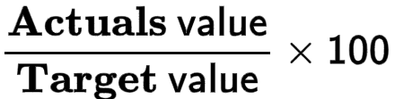

Details of Entities by Action
SEARCH TIP Press CTRL + F (Windows and Linux) or CMD + F (Mac) to search within this page.
To access this screen, click: Reporting > Strategic results > Details of entities by action.
Some actions, such as screen access, are permitted only for authorized users, that is, users with the appropriate profile. In other words, if the user does not have the right profile, the user cannot perform the action.
To configure this security (also called user rights), complete the following steps:
-
Define the profiles in the Profile Management screen.
-
Define users and attach one or more profiles to them in the User Management screen.
-
Assign user rights to the desired profiles in the Profile Matrix screen.
The table below contains screen actions that are related to user rights:
| Module | Screen | Action |
|---|---|---|
|
Strategic results |
Entity summary by action |
Screen access |
Introduction
This screen allows you to view collected and target data of actions deployed on one or multiple entities, and attached to a strategy and an indicator:
-
By action
-
For each period
Collected data is actual data that has been entered or calculated for each indicator. Target data is data to achieve.
Only performance data are displayed on this screen. To view financial data (cost, budget), go to the Action Financial Data by Entity screen.
More precisely, on this screen, you can:
Getting Started with the Screen
The nested grid content depends on what is selected in the point of view (POV), that is:
-
The Strategy
-
The Stake
-
The Target level 1
-
The Target level 2
-
The Action for which you want to view data on each deployment entity
-
The Periodicity
NOTE The label and the data displayed in the "Period - Year" columns depend on the periodicity:- If the periodicity selected in the POV is the same as the action periodicity, the collected and target data are displayed as they are.
- If the periodicity selected in the POV is wider than the action periodicity, data is consolidated based on the consolidation method of the indicator attached to the action (also called temporal aggregation method in the Indicator Management screen).
- If the periodicity selected in the POV is narrower than the action periodicity, data is not displayed for this action.
-
The Display mode
NOTE The Display mode defines the way data are aggregated on periods:
-
Periodic: The data displayed is collected for each given period.
-
Cumulated: The data displayed is the aggregation between the collected data for the given period and previous collected data, based on the indicator aggregation method.
-
By default, you can view data on actions for the entity with the level 1 generation, which is the parent of all child entities and is at the top of the entity hierarchy.
To view data on actions for all child entities, click the in front of the Performance block of lines.
To hide data on actions for all child entities, click the in front of the Performance block of lines.
NOTE To know more on entities, see the Entity Management and Entity Type Management documentations.
Description of the Nested Grid Columns
The nested grid contains the following columns:
| Item | Description | ||||||||||||
|---|---|---|---|---|---|---|---|---|---|---|---|---|---|
|
Period |
The number and type of "Period - Year" columns depends on the Periodicity selected in the POV:
For each "Period - Year" column, you can view data in several lines:
NOTE To know more about these lines, see the View the Performance Data section below. |
||||||||||||
|
Progress |
The progress, in percentage, of the action against the final target value. Progress is calculated on a year-to-date basis. In other words, only the values in the Full year or Total columns are taken into account for the calculation formula.
The calculation formula depends on the trend given to the values of the indicator attached to the action, that is Maximize (indicator values increase over time) or Minimize (indicator values decrease over time):
There is a color dot next to the progress percentage. The color of the dot depends on the progress percentage and the trend given to the values of the indicator attached to the action:
To access the Strategy Reports screen, click the button next to the color dot. |
||||||||||||
|
Time spent |
The percentage of time spent to achieve the action compared to the time planned to achieve it.
Calculation formula:
NOTE The action periodicity is indicated at the end of the tooltip that appears when you hover over the percentage of time spent. |
{kind=link}
{kind=link}
{kind=link}
View the Performance Data
By default, you can view the action performance data for each entity and period as follows:
| Lines | Description |
|---|---|
|
Actuals |
Actual quantitative results of a company's operations that have already occurred.
Actual results can be raw data collected or the aggregation of multiple collected data.
If the entity on which the action is deployed is a collected level, this field displays the data collected for the indicator attached to the action in the Data Collection Campaigns screen.
If the entity on which the action is deployed is an aggregated level, this field displays the aggregated data on the entity based on the indicator aggregation method defined in the Indicator Management screen. |
|
Target |
Target you want to achieve. This value is defined for the action in the Indicator Tracking screen. |
|
Targets progress |
The progress, in percentage, of the action against its target value. Calculation formula:  |
Export a Summary Table
To export a summary table, click the button in the toolbar at the top right of the screen.
An Excel file is automatically downloaded to your computer.
Miscellaneous Questions
When the cells are gray, it means that the action value is not defined for this period and year.
There are two possibilities:
-
There is no Actuals value.
NOTE Make sure the indicator is deployed in at least one data collection campaign, and that data is collected between the first year and the last year of the target. If there is no collected value for the indicator, the "cumulative Actuals value for the first year" and the "last known annual cumulative Actual value" calculation items will be empty.
-
The indicator aggregation method is “last known value including empty”.
NOTE If there are no values collected for the last period, the last known value is empty. The progress calculation is based on cumulative data regarding the indicator aggregation method, that is why there is no value for the “last known annual cumulative Actuals value” calculation item.